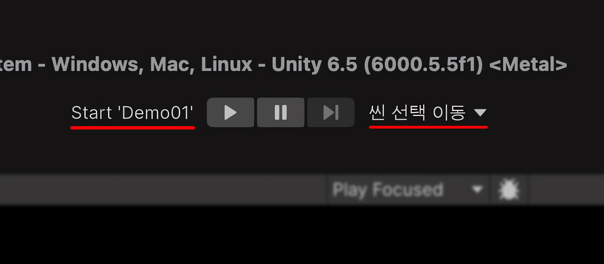
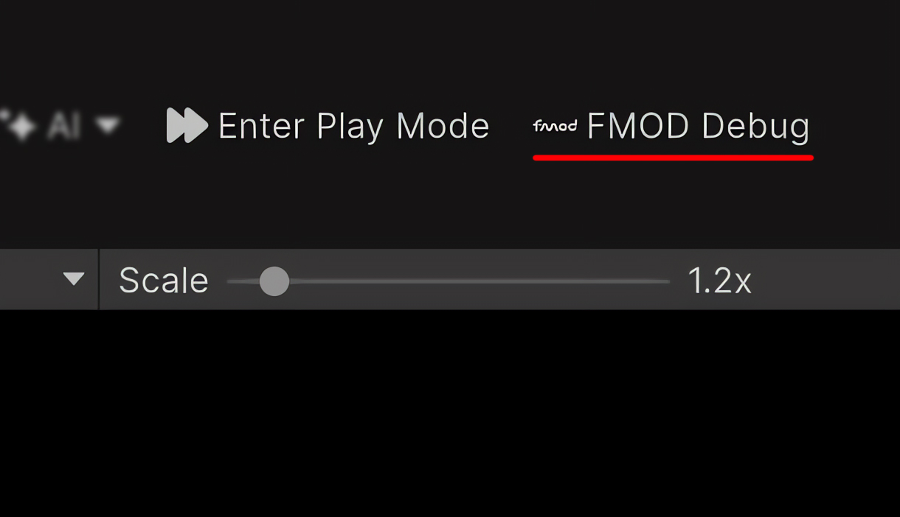

툴바 기능
Enter Play Mode Options
토글로 Unity의 Enter Play Mode Options를 켜거나 끕니다. 에디터가 Play Mode일 때는 비활성화됩니다.

Scene Switcher
좌측의 시작 씬 버튼은 프로젝트의 Build Settings 또는 Build Profiles에서 첫 번째로 활성화된 씬을 즉시 엽니다. 우측의 씬 선택 메뉴를 사용하면 Scene Search Folders에 지정된 폴더 내의 씬들을 빠르게 탐색하고 이동할 수 있습니다.
두 기능 모두 Play Mode에서는 비활성화됩니다. 씬을 이동할 때 저장되지 않은 변경 사항이 있다면 Unity가 자동으로 저장 여부를 묻는 창을 띄웁니다.

Time Scale
슬라이더는 Edit Mode와 Play Mode에서 Time.timeScale을 변경합니다. Reset 기능은 Project Settings에 설정한 값으로 복원합니다.

FMOD Debug
FMOD for Unity가 설치되어 있으면 토글로 FMOD Debug Overlay를 제어합니다. Play Mode에서는 비활성화됩니다.

Localization
Unity Localization이 설치되어 있으면 메뉴에서 활성 Locale을 선택합니다. Edit Mode와 Play Mode에서 모두 사용할 수 있습니다.

Play Mode 사용 여부
| 모듈 | Edit Mode | Play Mode |
|---|---|---|
| Enter Play Mode Options | 사용 가능 | 비활성화 |
| Scene Switcher | 사용 가능 | 비활성화 |
| FMOD Debug | 사용 가능 | 비활성화 |
| Localization | 사용 가능 | 사용 가능 |
| Time Scale | 사용 가능 | 사용 가능 |